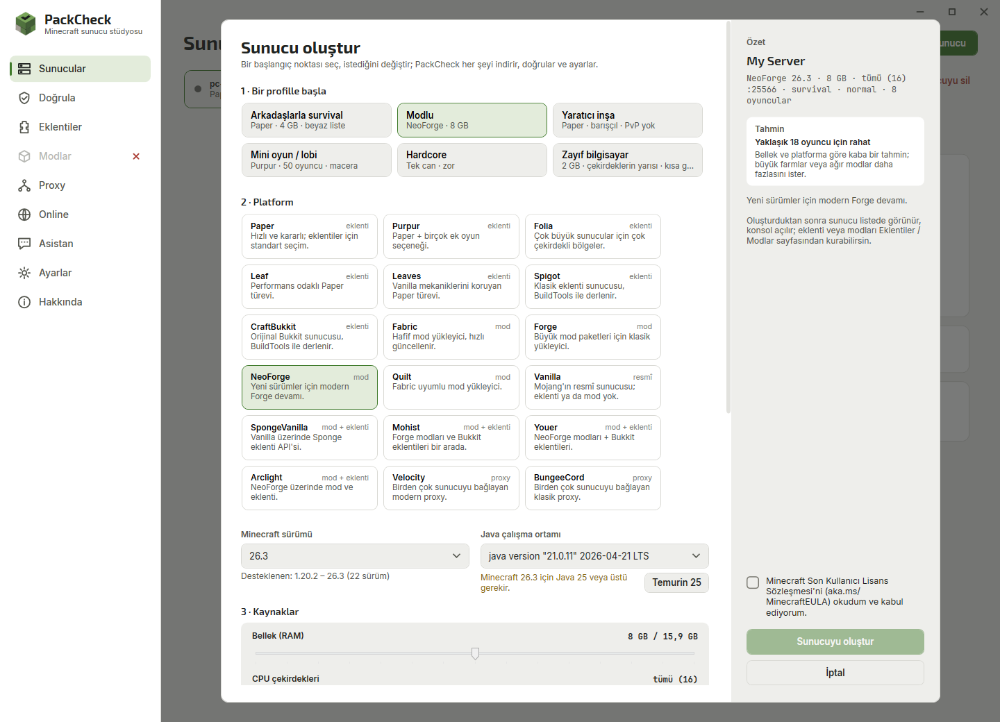
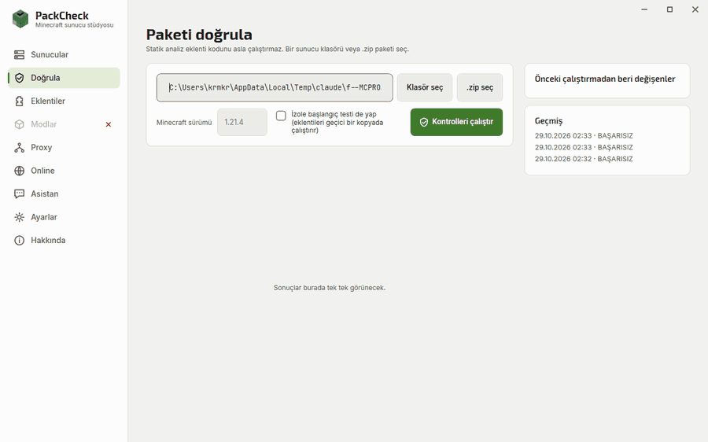
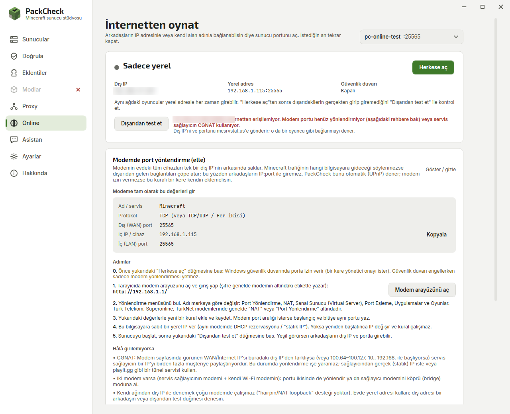
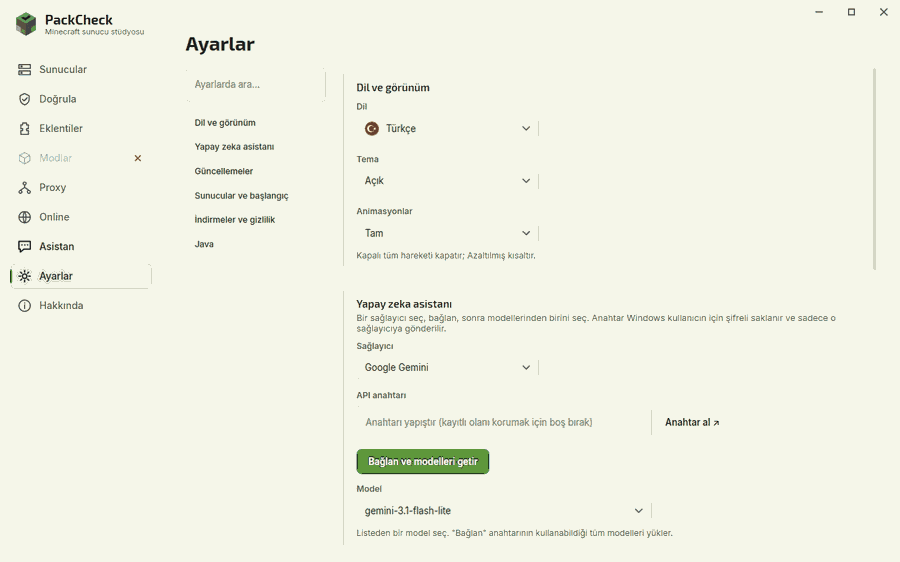

Everything a home server needs
18 server platforms
Paper, Purpur, Folia, Leaf, Leaves, Spigot, CraftBukkit, Vanilla, Fabric, Quilt, Forge, NeoForge, SpongeVanilla, Mohist, Youer, Arclight, Velocity and BungeeCord – downloaded from official sources and hash-verified.
Automatic Java
The right Eclipse Temurin version (8, 17, 21 or 25) is installed for you, read from the server jar itself.
Create wizard
Profiles for survival with friends, modded, creative, minigames, hardcore or a low-end PC. RAM and CPU sliders, game rules, a free port and a capacity estimate.
Live dashboard and console
TPS, CPU, RAM and ping gauges, players, uptime, a searchable console with clickable player names and crash detection.
Plugins and mods
Browse Modrinth, Hangar and CurseForge by category. Incompatible items explain why; installed ones show updates.
Play over the internet
Firewall rule and UPnP in one click, a port forwarding guide when the router refuses, and a reachability test from outside.
Pack validation
Missing dependencies, wrong Minecraft versions, duplicates, corrupt jars, client-only mods – with evidence and a fix. Also as a CLI for CI.
AI assistant
Claude, ChatGPT, Gemini, Grok, DeepSeek, Mistral, Groq, OpenRouter or a local model. It reads logs and files; every change waits for your approval.
Proxy networks
Connect Velocity or BungeeCord to backend servers with forwarding secrets and safe backend settings written for you.
Screenshots




Questions
How do I make a Minecraft server on Windows?
Install PackCheck, click New server, choose a profile such as Survival with friends, accept the Minecraft EULA and press Create server. PackCheck downloads the server, installs Java and starts it.
How can my friends join my Minecraft server?
On the same network they use the local address. Over the internet press Open to the internet on the Online page; if the router does not forward the port automatically, follow the guide there and confirm with Test from outside.
Paper, Fabric or Forge – which should I choose?
Paper for plugins, Fabric or NeoForge for mods, Mohist or Arclight for both, Velocity to link several servers. The wizard explains every platform.
Why does my plugin or mod not load?
Run Validate: it shows missing dependencies, Minecraft version mismatches, duplicates and corrupt files with the fix.
Is PackCheck free?
Yes. It is open source under the MIT license, needs no account and sends no telemetry.